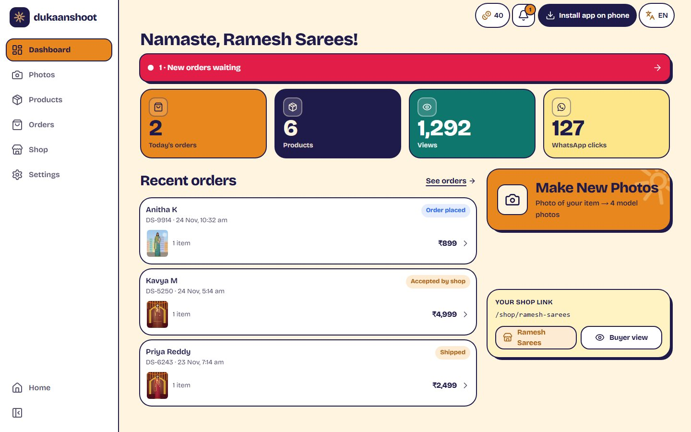
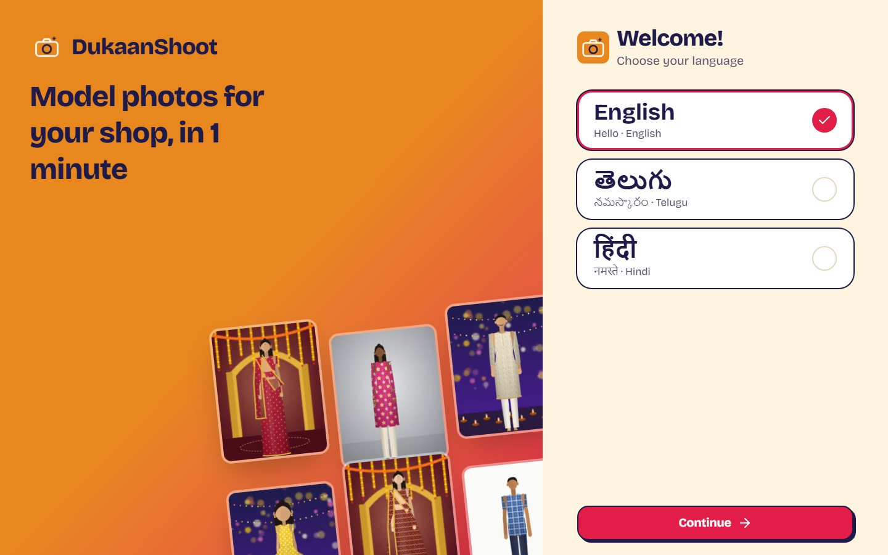

Cover storyCommerce · AI imageryp.03
DukaanShoot
A shopkeeper photographs a saree, and a minute later has four model photos and an online shop to sell it from, in English, Telugu or Hindi.
- Languages, end to end
- 3
- Model photos per item
- 4
- Lighthouse accessibility
- 100




- Installs like an app
- AI model photos
- Browse shops without logging in
- The shopkeeper’s own photo
- Model, pose, background
- Credits, deducted on the server
- Photos, before / after
- Order on WhatsApp
- Cash on delivery
- New orders arrive live
- WhatsApp clicks counted
- Their own shop link
Small shops in India sell beautiful clothes from plain photos: a saree laid on a counter, under a tube light. DukaanShoot is a mobile-first app for those shopkeepers. They photograph an item, choose a model, pose and background, and get four model photos. One more tap lists it in their own online shop.
Buyers browse local shops without logging in, order with Cash on Delivery or Pay at Shop, and follow a live timeline as the seller moves the order from New to Packed to Delivered. The whole app works in English, Telugu and Hindi.
“Any AI failure falls back to demo photos. A demo never crashes.”
- A swappable AI provider. The app talks to one interface, so a mock renderer and the FASHN AI API are interchangeable.
- Money and stock are safe on the server. Postgres functions deduct credits and reduce stock in one transaction, refund failed jobs exactly once, and payments are HMAC-verified first.
- Built for the phone in the shopkeeper’s hand. Mobile-first from 360px and installable as a PWA; the marketplace scores 100 in Lighthouse for accessibility, best practices and SEO.